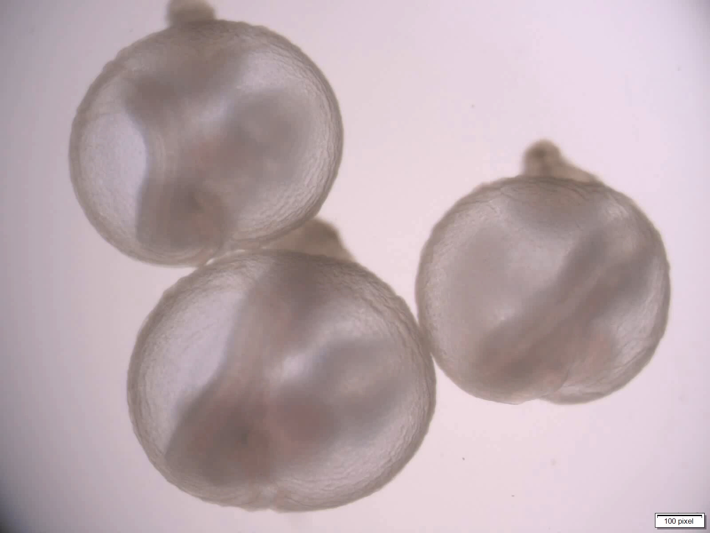

Deep Learning &
ResNet18 Infrastructure
An in-depth look at how StembryoNet is revolutionizing embryo classification through AI.
StembryoNet is a deep learning model AI. It’s built upon a CNN (convolutional neural network) called ResNet18. CNN’s are effective systems for analyzing images because of their use of kernels (small filters) that detect various visible features such shapes, textures, and edges. The AI then scans the features it sees through multiple layers of its own data to detect complex visual patterns. StembryoNet relies on a CNN due to there impressive ability to identify important developmental structures.
Categorizing ETiX-embryos as either normal or abnormal is one of the main responsibilities of StembryoNet, and it’s pretty good at doing that for later stage ETiX-embryos. This typically is a time-consuming process because it’s dependent upon an embryologist to review each individual embryo in an experiment to determine whether it’s viable for further experimentation or not, but StembryoNet eliminates human error in embryo classification and is 18 times faster than an expert embryologist.
ResNet18 is an advanced CNN that contains five convolutional blocks, residual connections, and activation functions that are used for image analysis. StembryoNet uses ResNet18 as a structural backbone due to it’s impressive ability to bypass specific layers within its network to save time and resources during experimentation.
The final layer in the StembryoNet CNN determines if the embryo being studied is normal or abnormal, and this process is called binary classification. StembryoNet computes a probability score of the embryo developing normally using a mathematical function called a sigmoid function. The StembryoNet model was trained with a dataset of time-lapse images of ETiX- embryos over the last 25 hours of development, so that it can recognize visual patterns associated with specific outcomes.
Apart from other AI’s, StembryoNet analyzes images from multiple time points within a dataset to predict what the outcome of an ETiX-embryo will be. Joined with synchronized training data, this has led to StembryoNet being 88% accurate in its prediction capabilities. StembryoNet has an elaborate infrastructure and CNN backbone allows it to outperform other advanced AI models, and expert embryologists at a far greater speed.